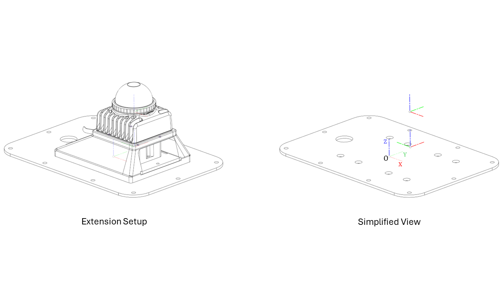
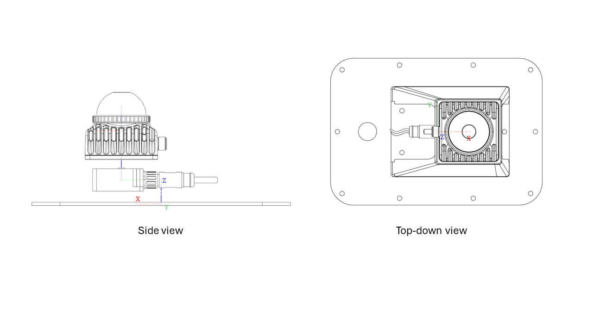

UGV Devkit - Livox Mid360 + IMU Extension
Revision History
Revision |
Date (DD/MM/YYYY) |
Author |
Changes |
|---|---|---|---|
1 |
16/05/2024 |
WR Dev Team |
Initial release |
This extension module for the UGV development kit consists of a Livox Mid360 LiDAR sensor and an IMU sensor. It is designed to provide a cost-effective solution for mobile robot 3D navigation and obstacle avoidance.
Key Specifications
- Livox Mid-360 LiDAR
Laser safety: Class 1
- Detection range (@100 klx)
40 m @ 10% reflectivity
70 m @ 80% reflectivity
FOV: Horizontal: 360°, Vertical: -7°~52°
Range precision: ≤ 2cm (@10m), ≤ 3cm (@0.2m)
Angular precision: < 0.15º
Frame rate: 10Hz (typical)
Data port: 100 BASE-TX Ethernet
Data synchronization: IEEE 1588-2008 (PTPv2), GPS
- IMU sensor
- Output data
Calibrated data from 3-axis gyroscope, 3-axis accelerometer, 3-axis magnetometer
Orientation in quaternion (up to 500Hz)
- Accelerometer
Range: ±16g
Resolution: 0.001g
- Gyroscope
Range: ±2000°/s
Resolution: 0.001°/s
- Magnetometer
Range: ±8 Gauss
Resolution: 0.25 Gauss
- Fusion performance:
Pitch/roll (static): 0.1°
Pitch/roll (dynamic): 0.1°
Heading drift (static, 6DOF): 0.12°/h
Heading drift (dynamic, 6DOF): < 5°
Communication interface: RS232
Reference Frames
The reference frames for the Livox Mid-360 lidar and IMU sensor follow the Right Hand Rule convention and are point cloud-centric frames of reference. They also follow Robotics convention with the X-axis pointing forwards.
The Cartesian coordinates O-XYZ of the components are defined as below: Point O of the Top Plate is the origin, and O-XYZ is the point cloud coordinates of the module.
{kind=link}

Relationship between sensors
Taking the Top Plate as the reference link for this extension, the relative position of the IMU Sensor and Lidar are as follows:
IMU Sensor: x= 35.4mm, y: 0.0mm, z: 21.3mm
Lidar: x= 35.4mm, y: 0.0mm, z: 65.4mm
{kind=link}

Note
Do note that the Lidar has an additional integrated IMU chip (with a 3-axis accelerometer and a 3-axis gyroscope). More information can be found here